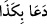

sebebi, sevincin ve üzüntünün yüzde ortaya çıkıp kendisini göstermesindendir. Âyette
kâfirlerin yerine zamir getirilecek iken ism-i mevsûl yâni “ellezi” kelimesinin
getirilmesi, onları inkârlarından dolayı kınamak ve neden üzüleceklerinin sebebini ifâde
etmek içindir. İfâdeyi tam olarak anlayacağımız şekle getirirsek şöyle söylenebilr: Vaad
edilenleri görmek, onların yüzlerini kötü bir hâle getirmiştir. Böylece onların yüzleri,
kısas edilmek üzere katledilmeye götürülen kişinin ya da bir takım azaplarla yüzyüze
kalan insanın yüzü gibi olmuştur.
Tâcu’l-masâdır’da zikredildiği üzere Arapçada “siyâet”, “sevindirdi” kelimesinin
zıddı olarak “üzdü” anlamına gelir. Sonra bu fiil âyette mechûl olarak kullanılmıştır.
Kamus’ta açıklandığına göre “
/sâehû” demek, “birisine hoşlanmayacağı bir
harekette bulundu” demektir. Bu hâliyle fiil müteaddî yâni geçişlidir. Ancak fiilin
“çirkin oldu” mânâsına olmak üzere lâzım yâni geçişsiz olması da câizdir. Mânâsı “kötü
ve çirkin oldu” demektir. Bâzı tefsir âlimlerine ve dil bilginlerine göre bu âyet-i
kerîmedeki mânâ da işte bu anlamdır. Bu fiil aslında “yüz”lere değil, o yüzlerin
sâhipleri olan insanlara isnâd edilmiştir. Mânâsı ise “onlar kötü ve çirkin oldular”
demektir.
Gerçeği görmekten engellenmiş olan bâzı “mahcûbin,” ilk başta yaratılmayı itirâf
etmekle birlikte yeniden dirilmeyi inkâr etmektedirler. Hiç kuşkusuz işte bunların
yüzleri, inkâr ettikleri gerçeği gördüklerinde kötüleşecek, yüzlerine bir sıkıntı hâkim
olacak ve ardından da kendilerine anlatılamayacak derecede elem verici bir azap
gelecektir.
“Ve (kendilerine): İşte sizin isteyip durduğunuz budur! denecektir.” İşte bu kâfirlere
cismânî ateşte yakılmalarından önce rûhâni ateşle azapları daha da artsın diye ve
azarlanmaları için “işte sizin isteyip durduğunuz budur” denecektir. Buradaki “budur”
şeklinde ifâde ettiğimiz “hâzâ” zamiriyle, kâfirlerin yakından görmüş oldukları azâba
işâret olunmaktadır. “
/Teddeûn” kelimesinin anlamı; “dünyada istediğiniz; alay ve
inkâr olsun diye acele ettiğiniz” demektir. Bu kelime “duâ” kelimesinden türetilerek
“iftial” kalıbına sokulmuştur. Âyetin metnindeki “ba” harf-i cerri buna göre fiilin sılası
olmaktadır. Arapçada; “
” denir ki mânâsı; “birisi bir şeyi çağırdı, talep etti”
demektir.
Bâzı âlimlere göre kelime “duâ” masdarından değil de “
/da’vâ” masdarından
türemiştir. Buna göre âyetin mânâsı; Sizler Peygamber (s.a.)’in ve müminlerin kıyâmet
günü başınıza azap geleceğini zikretmeleri sebebiyle ölümden sonra dirilme; mahşere
gelme ve azap olmayacağını iddiâ ediyordunuz. Bu son mânâya göre âyetin metnindeki
“ba” harfi cerri sebep bildirmiş olmaktadır.
Nakledildiğine göre zâhidlerden birisi gecenin başında namaza durur. Namazında bu
âyeti okur. Ardından aynı âyeti tekrar etmeye başlar. Nihâyet sabah namazı için ezan
okununcaya kadar namazında ağlaya ağlaya bu âyeti tekrar eder durur. İşte bu olay,
Allah Teâlâ’nın celâlini bilen âriflerin onun kahrını ve hâkimiyetini mülâhaza ettiği
esnâdaki yapacağı muâmeledir.